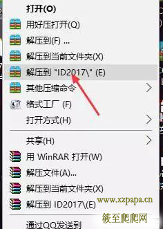
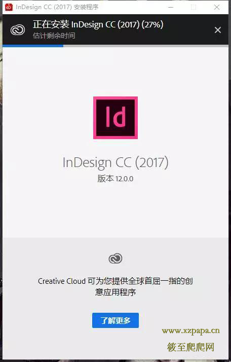
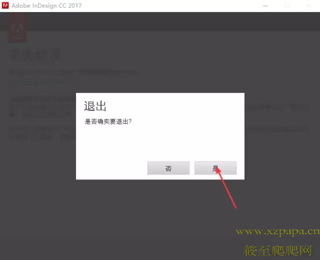
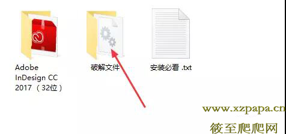
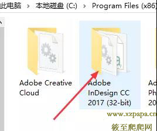
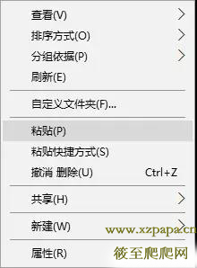
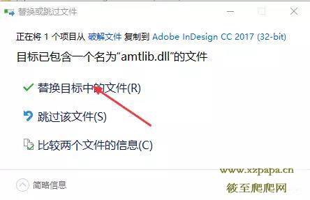

InDesign CC2017软件安装教程
发表日期： 2017-03-27
【原创】：筱至软件安装
InDesign CC2017（32/64位）下载地址：
链接： https://pan.baidu.com/s/1gg9jrt5
密码：3x62
安装中有问题可咨询筱至私人qq： 1074408919
链接： https://pan.baidu.com/s/1gg9jrt5
密码：3x62
安装中有问题可咨询筱至私人qq： 1074408919
软件介绍
AInDesign软件是一个定位于专业排版领域的设计软件， 是面向公司专业出版方案的新平台。它是基于一个新的开放的面向对象体系，可实现高度的扩展性 ，还建立了一个由第三方开发者和系统集成者可以提供自定义杂志、广告设计、目录、零售商设计工作室和报纸出版方案的核心。
安装步骤：
1.断开电脑网络，右击软件压缩包，选择解压到ID2017

2.双击Set-up文件

3.之后安装程序会自动安装，默认安装目录：C:\Program Files (x86)\Adobe\Adobe InDesign CC 2017 （备注：安装路径位置是没有选项的）

4.安装完成后，关闭弹出的窗口。

5.在附带的文件夹中打开 破解文件

6.复制该文件
7.找到刚才默认安装目录C:\Program Files (x86)\Adobe\Adobe InDesign CC 2017 (32-bit) 双击进入主文件夹

8.右击粘贴，弹出替换窗口，点击 替换目标中的文件


9.安装完成！